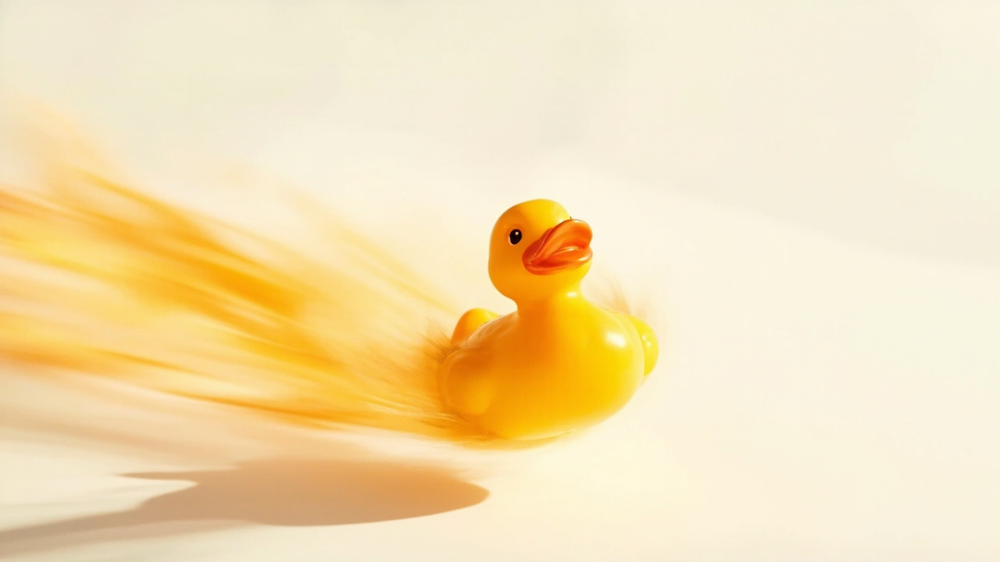

Redefine
size stories
See the ladder →

quacktory
Quacktory is a one-room atelier making rubber ducks as a single size ladder — Micro, Classic, Designer, Mega, Architect — from 4 cm keychain editions to a 1.5 m statement piece for lobbies and trade shows. One silhouette, scaled five ways, finished by hand.
Studio · 01
Hand-painted shells
Each Designer edition is primed, painted, and lacquered by hand. The orange kinetic streak is signed under the base.
Bath · 02
Bath-side classics
The 15 cm Classic — the most-photographed duck on the planet — sold singly or in a six-pack for nurseries and rental flats.
Bedroom · 03
Bedside Micros
Four-centimetre keychain editions on braided cotton loops. Sold in twelve-packs for stocking stuffers and desk drawers.
Office · 04
Desk-scale Mega
The 50 cm Mega in matte ivory. Heavy enough to anchor a monitor arm, soft enough to bounce a paper airplane off.